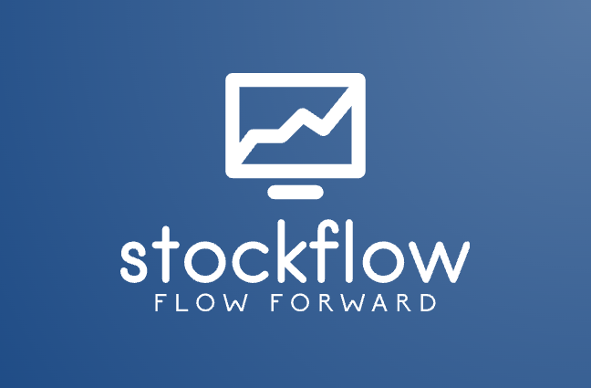

StockFlow
An automated stock analysis platform built with a microservice architecture and deployed on Kubernetes.

SYSTEM / STOCKFLOWENGINEERING · SYSTEMS · SECURITY
Hi, I’m Avinash. I’m an engineer exploring secure AI, distributed systems, and the infrastructure that brings ideas to life.
01 / ABOUT
I enjoy understanding how things work—and building them to work better.
I’m pursuing a master’s in AI Engineering and Security at Carnegie Mellon University, after working as an Associate Software Engineer at Oracle. My interests span secure and resilient AI systems, scalable infrastructure, systems engineering, and DevOps.
From storage engines and distributed computing to machine learning pipelines and open-source tools, I’m drawn to the details that make systems reliable and useful.
02 / SELECTED WORK
Experiments, tools, and systems built to solve interesting problems.
An automated stock analysis platform built with a microservice architecture and deployed on Kubernetes.

SYSTEM / STOCKFLOWINFRASTRUCTURE / MICROSERVICE
Capture Kubernetes resource and log snapshots and push them to object storage.
↗MACOS / UTILITY
A lightweight Caps Lock indicator that lives in the macOS menu bar.
↗PYTHON / TUI
A terminal tool that converts data to video format for storage on YouTube.
↗SYSTEMS / TUI
A terminal-based tool for cleaning system caches and other copies.
↗WEB / DJANGO
A technology blog website built with Django.
↗WEB / TRANSIT
A tool for navigating route choices on the Delhi Metro.
↗PYTHON / CLI
A command-line bug tracker built with Python and SQLite.
↗MACHINE LEARNING
A distributed implementation of the classic Naive Bayes classifier.
↗03 / BEYOND THE CODE
Notes, ideas, and things worth sharing.
04 / GET IN TOUCH
Have an idea, a question, or an interesting problem? I’d love to connect.
Say hello